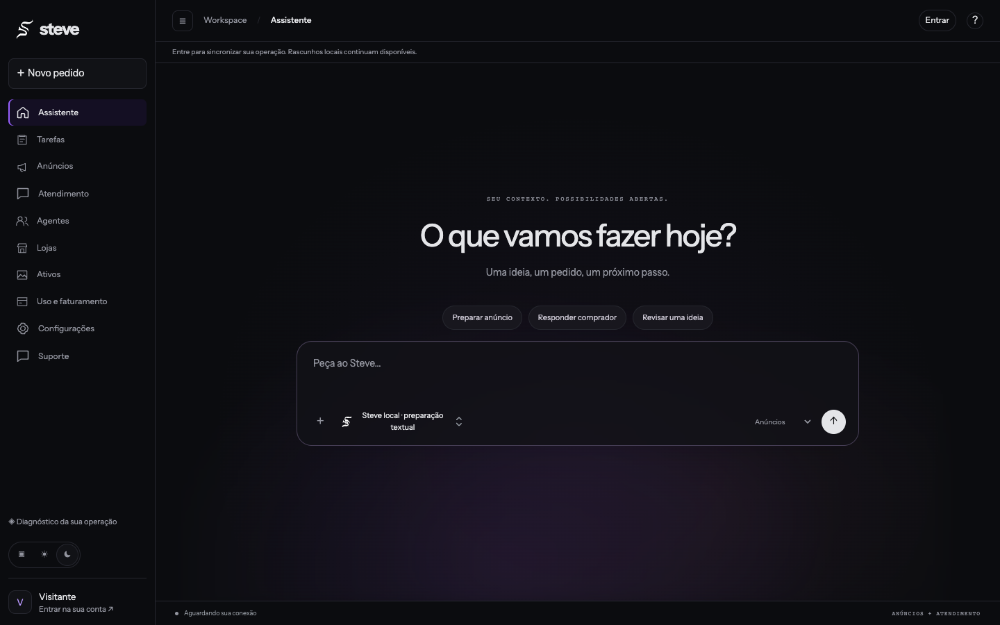

CENÁRIOS ILUSTRATIVOS · VISÃO DO PRODUTODo pedido
Do pedido
ao próximo passo.
Uma demonstração de como contexto, especialistas e revisão podem trabalhar juntos. As cenas abaixo não representam tarefas executadas nem resultados de clientes.
Consultar provas documentadas ↗01 / PREPARARUma intenção.
Uma intenção.
Um rascunho claro.
Você informa o produto e suas restrições. O piloto usa esse contexto para preparar texto para sua revisão.

EXEMPLO ILUSTRATIVO
Prepare a descrição desta caneca. Não invente medidas.
RASCUNHO PARA REVISÃOCaneca de cerâmica
Uma descrição começa com o que você realmente sabe sobre o produto.
Revisar informações →02 / CONECTAR CONTEXTOCada parte sabe
Cada parte sabe
onde entrar.
Foto, texto e preço têm necessidades diferentes. Esta cena mostra a divisão de trabalho pretendida; não confirma execução desses especialistas no piloto.
Contexto
do seu negócio
do seu negócio
ImagemReferências
TextoTom de voz
PreçoLimites definidos
RevisãoDecisão humana
03 / REVISARO próximo passo
O próximo passo
continua sendo seu.
Preparar, conferir e autorizar são estados diferentes. Publicação e envio dependem das integrações e permissões disponíveis.
DescriçãoRascunho
Preço e estoqueConferir
PublicaçãoAguardando integração
Sua revisão vem primeiro ↗